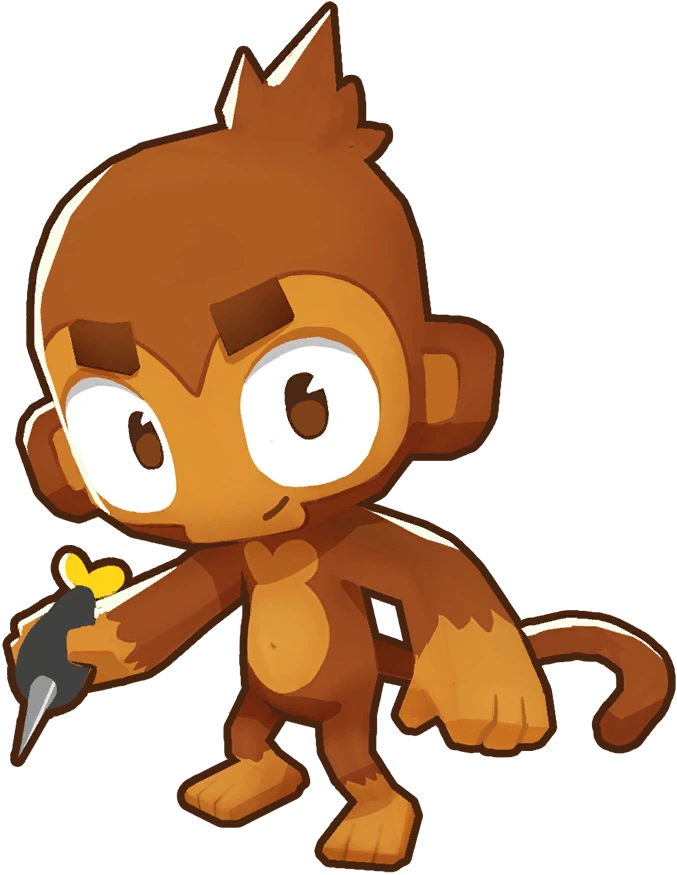
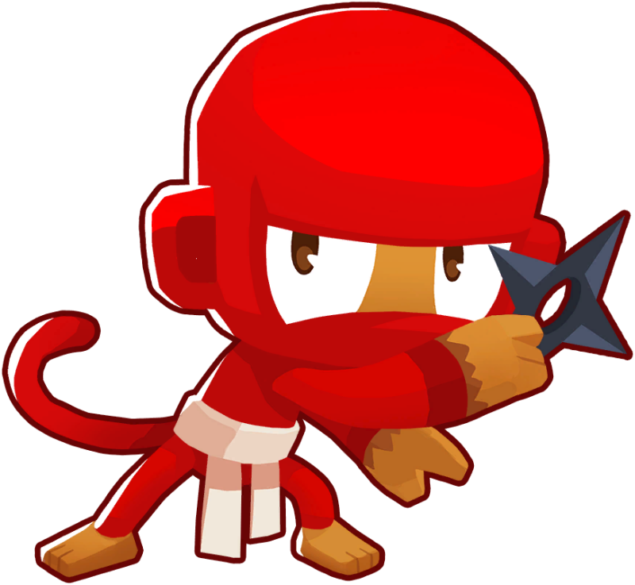
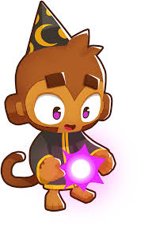
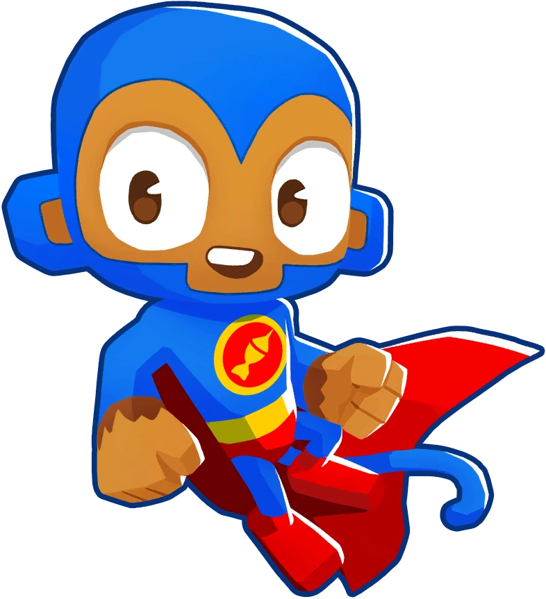
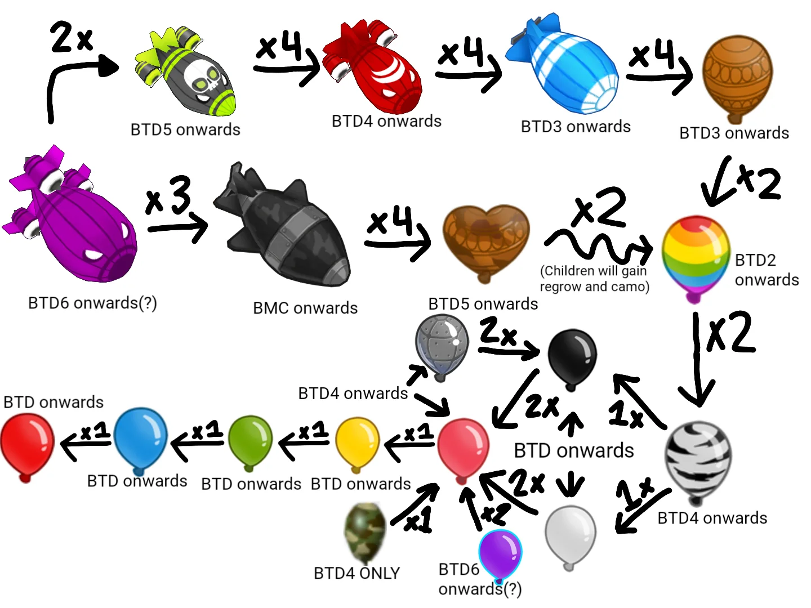

Lär dig allt om spelet
Bloons TD 6 är ett tower defense-spel där spelaren placerar apor för att stoppa bloons från att nå slutet av banan. När du poppar bloons får du pengar som du kan använda för att köpa nya torn eller uppgradera dem.
Spelet innehåller många banor, spellägen och strategier som gör att varje spelrunda kan vara annorlunda.

Ett enkelt torn som kastar pilar och är bra i början av spelet.

Ett snabbt torn som kan se camo-bloons.

Använder magi och kan kasta eld eller bli necromancer.

Ett mycket starkt torn som skjuter extremt snabbt.

Bloons finns i många typer. Vissa är snabba, vissa är starka och vissa är osynliga.
Senare i spelet kommer stora bloons som MOAB, BFB, ZOMG och BAD.